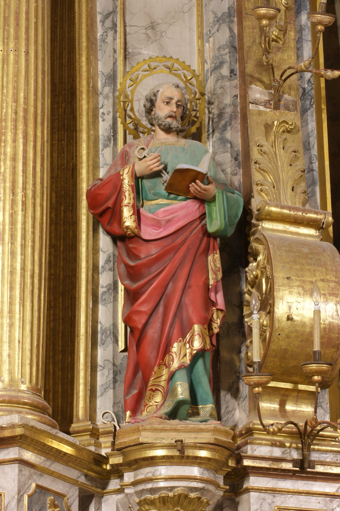

Sant Pere (s. I) va ser un dels primers apòstols, el seu portaveu i el deixeble escollit per Jesús per liderar la comunitat cristiana després de la seva mort. El seu nom vertader era Simó, però Jesús l’anomenà Pere per indicar que ell seria la “pedra” sobre la qual s’edificaria l’Església. Tot i ser l’apòstol més destacat, després del Prendiment negà tres vegades conèixer Jesús abans que el gall cantàs anunciant l’alba. Penedit immediatament, plorà amargament, motiu pel qual també és considerat el primer penitent.
Després de la mort de Jesús, es convertí en el principal dirigent de la primera comunitat cristiana.Tradicionalment se’l considera el primer bisbe de Roma i, per tant, el primer papa. Segons la tradició cristiana primitiva, va morir crucificat a Roma durant la persecució de Neró contra els cristians després del gran incendi de la ciutat. Per humilitat, demanà ser crucificat cap per avall, ja que no es considerava digne de morir igual que Jesús.
Sant Pere apareix representat en aquesta escultura com un home madur amb barba. En una mà sosté un llibre obert, que representa l’Evangeli i fa referència a la seva tasca evangelitzadora. Amb l’altra mà sosté dues claus, el seu atribut característic, que fan referència a la promesa de Jesús de confiar-li les claus del Regne del Cel.